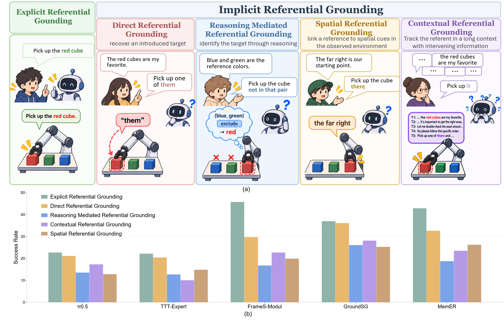
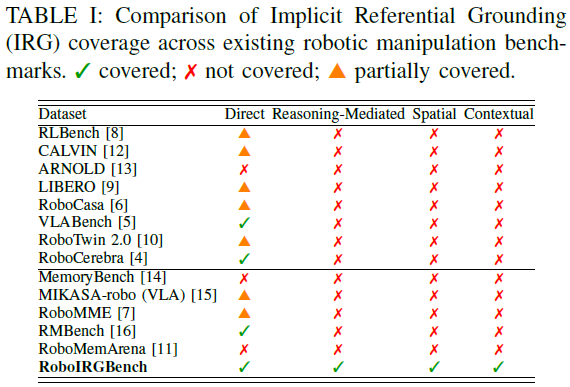
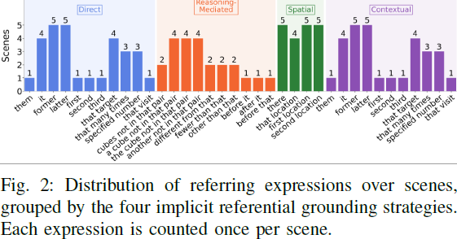
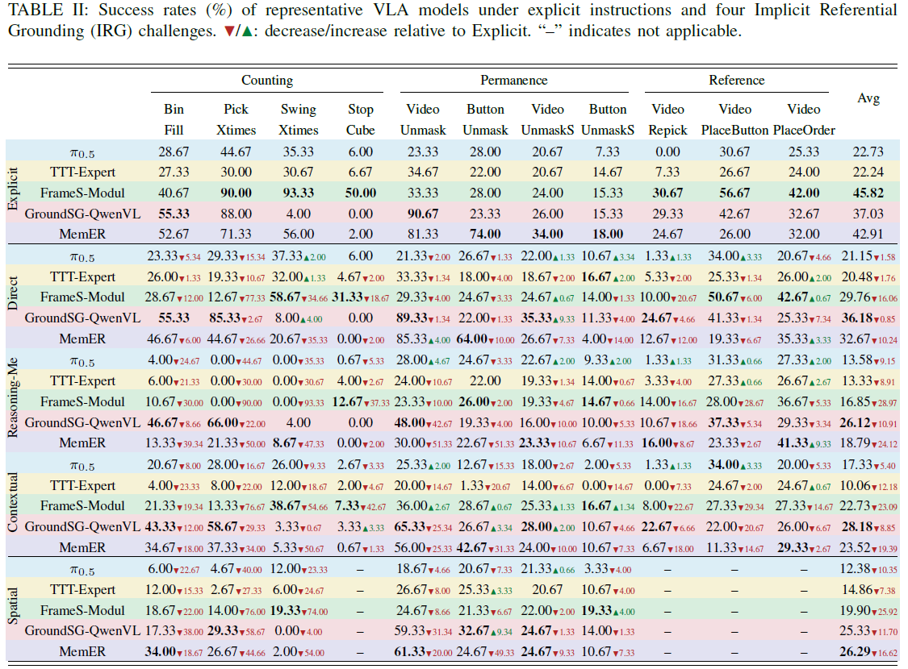
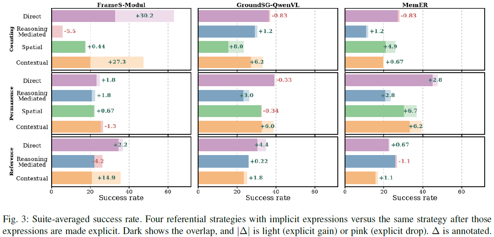
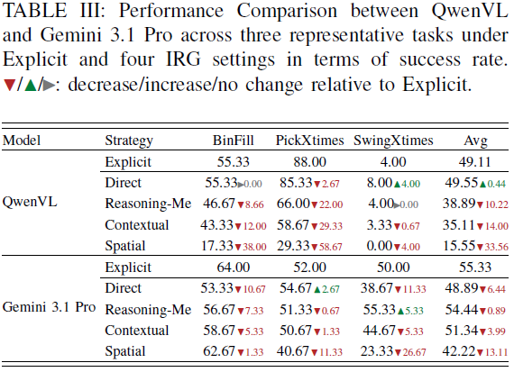
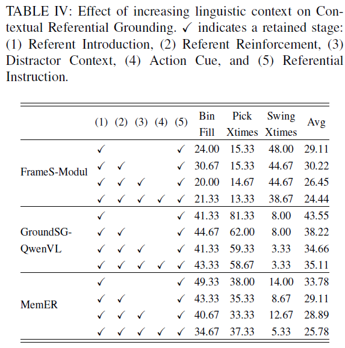
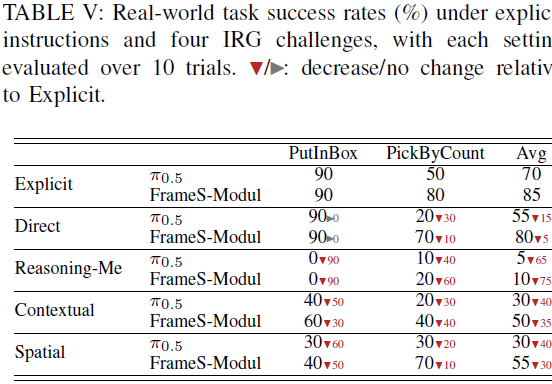

RoboIRGBench: Benchmarking Implicit Referential Grounding
in Vision-Language-Action Models
Current vision-language-action models can follow an explicit instruction, but they lack implicit referential grounding (IRG) when the target is left implicit.
Overview

Average success shows a noticeable gap under implicit referential grounding.
Abstract
Vision-language-action models have shown strong capabilities in robotic manipulation, yet existing benchmarks typically assume that task-relevant information is explicitly specified in the instruction. In practice, humans frequently refer to objects, quantities, and relations implicitly, requiring robots to recover the intended target from linguistic and perceptual context.
We study this capability as implicit referential grounding and introduce RoboIRGBench, a manipulation benchmark designed to evaluate it. Built upon RoboMME, RoboIRGBench contains 40 variants derived from 11 tasks and covers four challenges: direct, reasoning-mediated, spatial, and contextual referential grounding.
Because resolving an implicit reference often depends on previously established context, we evaluate representative VLAs spanning different memory mechanisms. Models that perform well under explicit instructions can degrade sharply when the same task-relevant information must be recovered from context. Reasoning-mediated and spatial references are particularly challenging. Models using an external VLM are more robust, but replacing that VLM with a stronger model does not eliminate the gap.
The same gap persists on a Franka Research 3, as both incorrect referent grounding and downstream execution failures.


Main Results
What happens when the target is left implicit?
VLAs that perform well with explicit targets can fail sharply once the same target must be recovered from context.
Reasoning-mediated referential grounding causes the largest and most consistent performance drop, showing that VLAs struggle especially when the target must be inferred rather than directly retrieved. Memory alone is insufficient: even memory-augmented models degrade substantially, while models with external VLM-based intermediate reasoning generally remain more robust.

Does making the reference explicit recover performance?
Making the reference explicit often recovers performance, showing that implicit referential grounding introduces additional difficulty beyond manipulation itself.
Explicitly resolving the reference improves performance across many tasks, especially for direct, contextual, and spatial grounding. Reasoning-mediated grounding is less consistent, because these tasks still require semantic or numerical reasoning even after the referent is made explicit.

Can a stronger external VLM solve IRG?
A stronger VLM improves IRG performance, but does not eliminate the referential robustness gap.
Replacing Qwen-VL with Gemini substantially improves performance across several IRG settings, especially reasoning-mediated, contextual, and spatial grounding. Performance still remains below the explicit baseline.

How does longer context affect IRG?
IRG performance generally declines as more linguistic context is introduced.
Adding referent reinforcement, distractor context, and an action cue produces an overall downward trend. Longer intervening context makes it harder for models to preserve and correctly recover the intended referent.

Does the referential robustness gap persist in the real world?
Both policies show clear performance degradation under IRG compared with explicit instructions.
Reasoning-mediated grounding is the most challenging in real-world manipulation, while contextual and spatial grounding also lead to clear degradation. Overall, both policies perform substantially better under explicit instructions than under IRG.

Examples
The same manipulation succeeds when the target is named, and fails when that target must be recovered from context.
The difficulty of BinFill, PickXtimes, and SwingXtimes is modified to support the strategies. Under Spatial, BinFill always shows three differently colored cubes to support directional cues.
Simulation
Model
Task
Category
SuccessExplicit
FailureDirect
Real robot
Task
Category